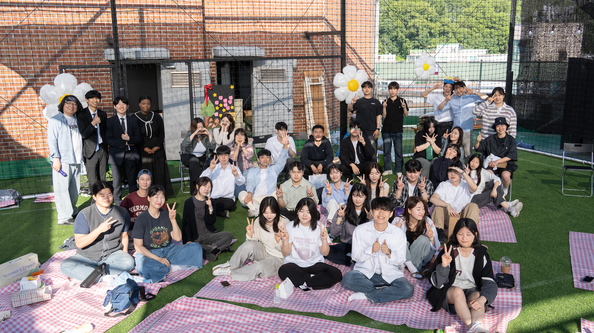

나의 사역 MBTI는?
하나님이 주신 나의 달란트,
어떤 팀에서 가장 빛날까요?
#복지교회청년부 #1인1사역
테스트 시작하기
🤔
질문 내용이 여기에 들어갑니다.
답변 A
답변 B
당신의 영적 달란트를
분석하고 있습니다...
결과 타이틀
🎁
💡 이런 점이 특별해요
성향 설명이 들어갑니다.
🙌 추천 사역팀:
팀장:
🔗 결과 공유하기
📞 사역 신청하러 가기
테스트 다시하기